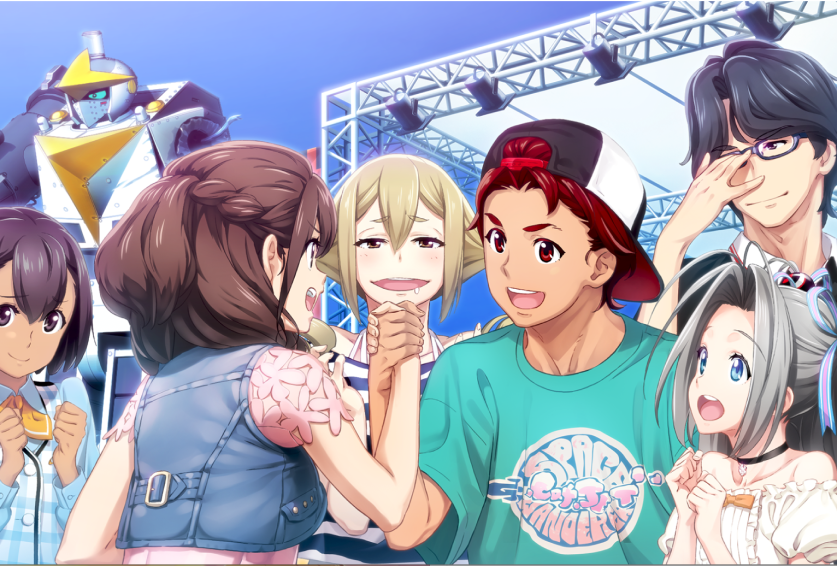

Robotics;Notes DaSH es la secuela directa de Robotics;Notes, y fue lanzada en el año 2019 para Playstation 4 y Nintendo Switch, llegaría a PC en Steam en 2020 junto con su traducción oficial al inglés.
La historia toma lugar en 2020 medio año después de los eventos de Robotics;Notes cuando Yashio Kaito regresa a Tanegashima de vacaciones. En el mismo barco también venia Hashida Itaru, uno de los personajes principales de Steins;Gate, quien dice estar visitando la isla para ver el festival. Mientras Tanegashima se prepara para la celebración del festival de verano, el caos está a punto de estallar y parece que los jóvenes salvadores del mundo tendrán que dar un paso al frente una vez más...
La historia toma lugar en 2020 medio año después de los eventos de Robotics;Notes cuando Yashio Kaito regresa a Tanegashima de vacaciones. En el mismo barco también venia Hashida Itaru, uno de los personajes principales de Steins;Gate, quien dice estar visitando la isla para ver el festival. Mientras Tanegashima se prepara para la celebración del festival de verano, el caos está a punto de estallar y parece que los jóvenes salvadores del mundo tendrán que dar un paso al frente una vez más...

Se recomienda tener conocimientos sobre Chaos;Head, Steins;Gate y Robotics;Notes para poder entender por completo la historia de Robotics;Notes DaSH
Si estás interesado en leer Steins;Gate, la opción más recomendada es comprarlo en Steam y utilizar el parche de mejoras de Committe of Zero para tener la mejor experiencia posible.
Si estás interesado en leer Steins;Gate, la opción más recomendada es comprarlo en Steam y utilizar el parche de mejoras de Committe of Zero para tener la mejor experiencia posible.